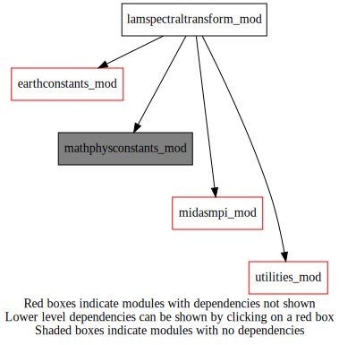
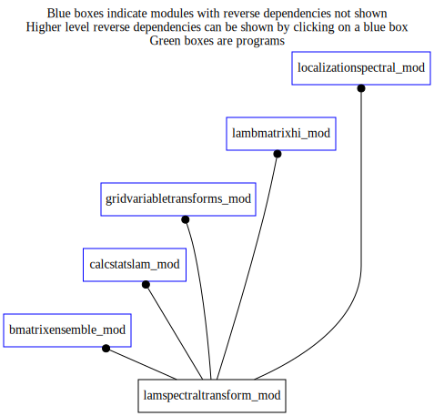

Dependency Diagrams:
 Direct Dependency Diagram¶
 Reverse Dependency Diagram¶
Description
MODULE lamSpectralTransform_mod (prefix=’lst’ category=’4. Data Object transformations’)
- Purpose
Bi-Fourier spectral transform for limited-area applications. Depends on ffft8 and setfft8 routines in ARMNLIB.
Quick access
- Variables
- Routines
lst_laplacian(),lst_reshapetrunc(),lst_reshapetrunc_kij(),lst_setup(),lst_totalwavenumber(),lst_transform1d(),lst_transform1d_kij(),lst_vartransform(),lst_vartransform_ijk(),lst_vartransform_kij(),ngfft(),transpose2d_lattom(),transpose2d_lattom_kij(),transpose2d_levtolon(),transpose2d_levtolon_kij(),transpose2d_levtolon_kij_mpitypes(),transpose2d_levton(),transpose2d_levton_kij(),transpose2d_lontolev(),transpose2d_lontolev_kij(),transpose2d_lontolev_kij_mpitypes(),transpose2d_mtolat(),transpose2d_mtolat_kij(),transpose2d_ntolev(),transpose2d_ntolev_kij()Needed modules
mpi
midasmpi_mod: MODULE midasMpi_mod (prefix=’mmpi’ category=’8. Low-level utilities and constants’)
mathphysconstants_mod: MODULE MathPhysConstants_mod (prefix=’mpc’ category=’8. Low-level utilities and constants’)
earthconstants_mod: MODULE earthConstants_mod (prefix=’ec’ category=’8. Low-level utilities and constants’) Prefixes: ec_ (Earth constants), for miscellaneous values from diverse sources
utilities_mod: MODULE utilities_mod (prefix=’utl’ category=’8. Low-level utilities and constants’)Types
- type lamspectraltransform_mod/unknown_type¶
- Type fields
% alllatbeg (*) [integer ,allocatable]
% alllatend (*) [integer ,allocatable]
% alllatperpe (*) [integer ,allocatable]
% alllevbeg (*) [integer ,allocatable]
% alllevend (*) [integer ,allocatable]
% alllonbeg (*) [integer ,allocatable]
% alllonend (*) [integer ,allocatable]
% alllonperpe (*) [integer ,allocatable]
% allmbeg (*) [integer ,allocatable]
% allmend (*) [integer ,allocatable]
% allmskip (*) [integer ,allocatable]
% allnbeg (*) [integer ,allocatable]
% allnend (*) [integer ,allocatable]
% allnskip (*) [integer ,allocatable]
% allocated [logical ]
% griddataorder [character ]
% ilafromek (*,*) [integer ,allocatable]
% ilaglobal (*) [integer ,allocatable]
% ilapxy (*) [real ,allocatable]
% k (*) [integer ,allocatable]
% k_r8 (*) [real ,allocatable]
% kfrommnglb (*,*) [integer ,allocatable]
% ktrunc [integer ]
% lapxy (*) [real ,allocatable]
% latperpe [integer ]
% latperpemax [integer ]
% lonlatdivisible [logical ]
% lonperpe [integer ]
% lonperpemax [integer ]
% m (*) [integer ,allocatable]
% maxlevcount [integer ]
% maxmactivecount [integer ]
% maxnla [integer ]
% mmax [integer ]
% mpimode [character ]
% mylatbeg [integer ]
% mylatend [integer ]
% mylevbeg [integer ]
% mylevcount [integer ]
% mylevend [integer ]
% mylonbeg [integer ]
% mylonend [integer ]
% mymactivecount [integer ]
% mymbeg [integer ]
% mymcount [integer ]
% mymend [integer ]
% mymindex (*) [integer ,allocatable]
% mymskip [integer ]
% mynbeg [integer ]
% myncount [integer ]
% mynend [integer ]
% mynindex (*) [integer ,allocatable]
% mynskip [integer ]
% n (*) [integer ,allocatable]
% neperk (*) [integer ,allocatable]
% neperkglobal (*) [integer ,allocatable]
% ni [integer ]
% nip [integer ]
% nj [integer ]
% njp [integer ]
% nla [integer ]
% nla_index (*,*) [integer ,allocatable]
% nlaglobal [integer ]
% nmax [integer ]
% normfactor (*,*) [real ,allocatable]
% normfactorad (*,*) [real ,allocatable]
% nphase [integer ]
% recvtype_levtolon [integer ]
% recvtype_lontolev [integer ]
% sendtype_levtolon [integer ]
% sendtype_lontolev [integer ]
% weight (*) [real ,allocatable]
Variables
- lamspectraltransform_mod/struct_lst [public]¶
Subroutines and functions
- subroutine lamspectraltransform_mod/lst_setup(lst, ni_in, nj_in, dlon_in, ktrunc_in, mpimode[, maxlevels_opt[, griddataorder_opt]])¶
- Arguments
lst [struct_lst ] :: OUT
ni_in [integer ,in]
nj_in [integer ,in]
dlon_in [real ,in]
ktrunc_in [integer ,in]
mpimode [character ,in]
- Options
maxlevels_opt [integer ,in,]
griddataorder_opt [character ,in,]
- Called from
ensemblescaledecomposition(),horizcorrelfunction(),calcspectralstats(),normalizepowerspectrum(),applyhorizloc(),vortdivtopsichi_gsv(),lbhi_setup(),lsp_setup(),setuplamspectralhloc()- Call to
utl_abort(),ngfft(),mmpi_setup_lonbands(),mmpi_setup_latbands(),mmpi_setup_m(),mmpi_setup_n(),mmpi_setup_levels(),lst_totalwavenumber()
- function lamspectraltransform_mod/lst_totalwavenumber(m, n, mref, nref, kref)¶
- Arguments
m [integer ]
n [integer ]
mref [integer ]
nref [integer ]
kref [integer ]
- Return
r [real ]
- Called from
- subroutine lamspectraltransform_mod/lst_vartransform(lst, spectralstatevar, gridstate, transformdirection, nk)¶
- Arguments
lst [struct_lst ,in]
spectralstatevar (*,*,*) [real ,inout]
gridstate (*,*,*) [real ,inout]
transformdirection [character ,in]
nk [integer ,in]
- Called from
ensemblescaledecomposition(),horizcorrelfunction(),calcspectralstats(),normalizepowerspectrum(),applyhorizloc(),lbhi_cv2gd(),lbhi_cv2gdadj(),lst_laplacian(),setuplamspectralhloc(),lsp_lsqrt(),lsp_lsqrtad()- Call to
- subroutine lamspectraltransform_mod/lst_vartransform_ijk(lst, spectralstatevar, gridstate, transformdirection, nk)¶
- Arguments
lst [struct_lst ,in]
spectralstatevar (*,*,*) [real ,inout] :: OUT
gridstate (lst%mylonend-(lst%mylonbeg)+1,lst%mylatend-(lst%mylatbeg)+1,nk) [real ,inout]
transformdirection [character ,in] :: IN
nk [integer ,in,]
- Called from
- Call to
transpose2d_lontolev(),utl_abort(),lst_reshapetrunc(),transpose2d_ntolev(),lst_transform1d(),transpose2d_lattom(),transpose2d_mtolat(),transpose2d_levton(),transpose2d_levtolon()
- subroutine lamspectraltransform_mod/lst_vartransform_kij(lst, spectralstatevar, gridstate, transformdirection, nk)¶
- Arguments
lst [struct_lst ,in]
spectralstatevar (*,*,*) [real ,inout] :: OUT
gridstate (nk,lst%mylonend-(lst%mylonbeg)+1,lst%mylatend-(lst%mylatbeg)+1) [real ,inout]
transformdirection [character ,in] :: IN
nk [integer ,in,]
- Called from
- Call to
transpose2d_lontolev_kij_mpitypes(),transpose2d_lontolev_kij(),utl_abort(),lst_reshapetrunc_kij(),transpose2d_ntolev_kij(),lst_transform1d_kij(),transpose2d_lattom_kij(),transpose2d_mtolat_kij(),transpose2d_levton_kij(),transpose2d_levtolon_kij_mpitypes(),transpose2d_levtolon_kij()
- subroutine lamspectraltransform_mod/lst_transform1d(field3d, transformdirection, transformaxe, ni_l, nj_l, nip_l, njp_l, kstart, kend)¶
- Arguments
field3d (ni_l+nip_l,nj_l+njp_l,kend-kstart+1) [real ,inout]
transformdirection [character ,in]
transformaxe [character ,in]
ni_l [integer ,in]
nj_l [integer ,in]
nip_l [integer ,in]
njp_l [integer ,in]
kstart [integer ,in]
kend [integer ,in]
- Called from
- Call to
- subroutine lamspectraltransform_mod/lst_transform1d_kij(field3d, transformdirection, transformaxe, ni_l, nj_l, nip_l, njp_l, kstart, kend)¶
- Arguments
field3d (kend-kstart+1,ni_l+nip_l,nj_l+njp_l) [real ,inout]
transformdirection [character ,in]
transformaxe [character ,in]
ni_l [integer ,in]
nj_l [integer ,in]
nip_l [integer ,in]
njp_l [integer ,in]
kstart [integer ,in]
kend [integer ,in]
- Called from
- Call to
- subroutine lamspectraltransform_mod/transpose2d_lontolev(gd_out, gd_in, nk, lst)¶
- Arguments
gd_out (lst%ni,lst%mylatend-(lst%mylatbeg)+1,lst%mylevend-(lst%mylevbeg)+1) [real ,out]
gd_in (lst%mylonend-(lst%mylonbeg)+1,lst%mylatend-(lst%mylatbeg)+1,nk) [real ,in]
nk [integer ,in,]
lst [struct_lst ]
- Called from
gst_gdsp(),gst_spgda(),gst_reespe(),lst_vartransform_ijk()- Call to
- subroutine lamspectraltransform_mod/transpose2d_lontolev_kij_mpitypes(gd_out, gd_in, nk, lst)¶
- Arguments
gd_out (lst%mylevend-(lst%mylevbeg)+1,lst%ni,lst%mylatend-(lst%mylatbeg)+1) [real ,out]
gd_in (nk,lst%mylonend-(lst%mylonbeg)+1,lst%mylatend-(lst%mylatbeg)+1) [real ,in]
nk [integer ,in,]
lst [struct_lst ]
- Called from
- Call to
- subroutine lamspectraltransform_mod/transpose2d_lontolev_kij(gd_out, gd_in, nk, lst)¶
- Arguments
gd_out (lst%mylevend-(lst%mylevbeg)+1,lst%ni,lst%mylatend-(lst%mylatbeg)+1) [real ,out]
gd_in (nk,lst%mylonend-(lst%mylonbeg)+1,lst%mylatend-(lst%mylatbeg)+1) [real ,in]
nk [integer ,in,]
lst [struct_lst ]
- Called from
- Call to
- subroutine lamspectraltransform_mod/transpose2d_levtolon(gd_out, gd_in, nk, lst)¶
- Arguments
gd_out (lst%mylonend-(lst%mylonbeg)+1,lst%mylatend-(lst%mylatbeg)+1,nk) [real ,out]
gd_in (lst%ni,lst%mylatend-(lst%mylatbeg)+1,lst%mylevend-(lst%mylevbeg)+1) [real ,in]
nk [integer ,in]
lst [struct_lst ]
- Called from
- Call to
- subroutine lamspectraltransform_mod/transpose2d_levtolon_kij_mpitypes(gd_out, gd_in, nk, lst)¶
- Arguments
gd_out (nk,lst%mylonend-(lst%mylonbeg)+1,lst%mylatend-(lst%mylatbeg)+1) [real ,out]
gd_in (lst%mylevend-(lst%mylevbeg)+1,lst%ni,lst%mylatend-(lst%mylatbeg)+1) [real ,in]
nk [integer ,in]
lst [struct_lst ]
- Called from
- Call to
- subroutine lamspectraltransform_mod/transpose2d_levtolon_kij(gd_out, gd_in, nk, lst)¶
- Arguments
gd_out (nk,lst%mylonend-(lst%mylonbeg)+1,lst%mylatend-(lst%mylatbeg)+1) [real ,out]
gd_in (lst%mylevend-(lst%mylevbeg)+1,lst%ni,lst%mylatend-(lst%mylatbeg)+1) [real ,in]
nk [integer ,in]
lst [struct_lst ]
- Called from
- Call to
- subroutine lamspectraltransform_mod/transpose2d_lattom(gd_out, gd_in, lst)¶
- Arguments
gd_out (2*lst%mymcount,lst%nj+lst%njp,lst%mylevend-(lst%mylevbeg)+1) [real ,out]
gd_in (lst%ni+lst%nip,lst%latperpe,lst%mylevend-(lst%mylevbeg)+1) [real ,in]
lst [struct_lst ]
- Called from
gst_gdsp(),gst_spgda(),gst_reespe(),lst_vartransform_ijk()- Call to
- subroutine lamspectraltransform_mod/transpose2d_lattom_kij(gd_out, gd_in, lst)¶
- Arguments
gd_out (lst%mylevend-(lst%mylevbeg)+1,2*lst%mymcount,lst%nj+lst%njp) [real ,out]
gd_in (lst%mylevend-(lst%mylevbeg)+1,lst%ni+lst%nip,lst%latperpe) [real ,in]
lst [struct_lst ]
- Called from
- Call to
- subroutine lamspectraltransform_mod/transpose2d_mtolat(gd_out, gd_in, lst)¶
- Arguments
gd_out (lst%ni+lst%nip,lst%latperpe,lst%mylevend-(lst%mylevbeg)+1) [real ,out]
gd_in (2*lst%mymcount,lst%nj+lst%njp,lst%mylevend-(lst%mylevbeg)+1) [real ,in]
lst [struct_lst ]
- Called from
- Call to
- subroutine lamspectraltransform_mod/transpose2d_mtolat_kij(gd_out, gd_in, lst)¶
- Arguments
gd_out (lst%mylevend-(lst%mylevbeg)+1,lst%ni+lst%nip,lst%latperpe) [real ,out]
gd_in (lst%mylevend-(lst%mylevbeg)+1,2*lst%mymcount,lst%nj+lst%njp) [real ,in]
lst [struct_lst ]
- Called from
- Call to
- subroutine lamspectraltransform_mod/transpose2d_levton(spectralstatevar, gd_in, nk, lst)¶
- Arguments
spectralstatevar (lst%nla,lst%nphase,nk) [real ,out]
gd_in (2*lst%mymcount,lst%nj+lst%njp,lst%mylevend-(lst%mylevbeg)+1) [real ,in]
nk [integer ,in]
lst [struct_lst ]
- Called from
gst_gdsp(),gst_spgda(),gst_reespe(),gst_reespe_kij(),lst_vartransform_ijk()- Call to
- subroutine lamspectraltransform_mod/transpose2d_levton_kij(spectralstatevar, gd_in, nk, lst)¶
- Arguments
spectralstatevar (lst%nla,lst%nphase,nk) [real ,out]
gd_in (lst%mylevend-(lst%mylevbeg)+1,2*lst%mymcount,lst%nj+lst%njp) [real ,in]
nk [integer ,in]
lst [struct_lst ]
- Called from
- Call to
- subroutine lamspectraltransform_mod/transpose2d_ntolev(gd_out, spectralstatevar, nk, lst)¶
- Arguments
gd_out (2*lst%mymcount,lst%nj+lst%njp,lst%mylevend-(lst%mylevbeg)+1) [real ,out]
spectralstatevar (lst%nla,lst%nphase,nk) [real ,in]
nk [integer ,in,]
lst [struct_lst ]
- Called from
gst_spgd(),gst_speree(),gst_speree_kij(),lst_vartransform_ijk()- Call to
- subroutine lamspectraltransform_mod/transpose2d_ntolev_kij(gd_out, spectralstatevar, nk, lst)¶
- Arguments
gd_out (lst%mylevend-(lst%mylevbeg)+1,2*lst%mymcount,lst%nj+lst%njp) [real ,out]
spectralstatevar (lst%nla,lst%nphase,nk) [real ,in]
nk [integer ,in,]
lst [struct_lst ]
- Called from
- Call to
- subroutine lamspectraltransform_mod/lst_reshapetrunc(spectralstaterpn, spectralstatevar, direction, kstart, kend, lst)¶
- Arguments
spectralstaterpn (2*lst%mymcount,2*lst%myncount,kend-kstart+1) [real ,inout]
spectralstatevar (lst%nla,lst%nphase,kend-kstart+1) [real ,inout]
direction [character ,in] :: ToVAR or ToRPN
kstart [integer ,in]
kend [integer ,in]
lst [struct_lst ]
- Called from
- Call to
- subroutine lamspectraltransform_mod/lst_reshapetrunc_kij(spectralstaterpn, spectralstatevar, direction, kstart, kend, lst)¶
- Arguments
spectralstaterpn (kend-kstart+1,2*lst%mymcount,2*lst%myncount) [real ,inout]
spectralstatevar (lst%nla,lst%nphase,kend-kstart+1) [real ,inout]
direction [character ,in] :: ToVAR or ToRPN
kstart [integer ,in]
kend [integer ,in]
lst [struct_lst ]
- Called from
- Call to
- subroutine lamspectraltransform_mod/lst_laplacian(lst, gridstate, mode, nk)¶
- Arguments
lst [struct_lst ,in]
gridstate (lst%mylonend-(lst%mylonbeg)+1,lst%mylatend-(lst%mylatbeg)+1,nk) [real ,inout]
mode [character ,in]
nk [integer ,in,]
- Called from
- Call to
- subroutine lamspectraltransform_mod/ngfft(n)¶
- Arguments
n [integer ,inout] :: le plus petit entier >= n qui factorise
- Called from
fft3dvar(),fft3dvar_kij(),lst_setup(),lst_transform1d(),lst_transform1d_kij()
{kind=link}
{kind=link}